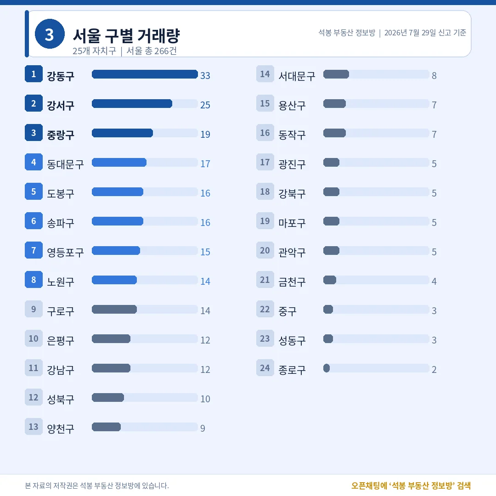
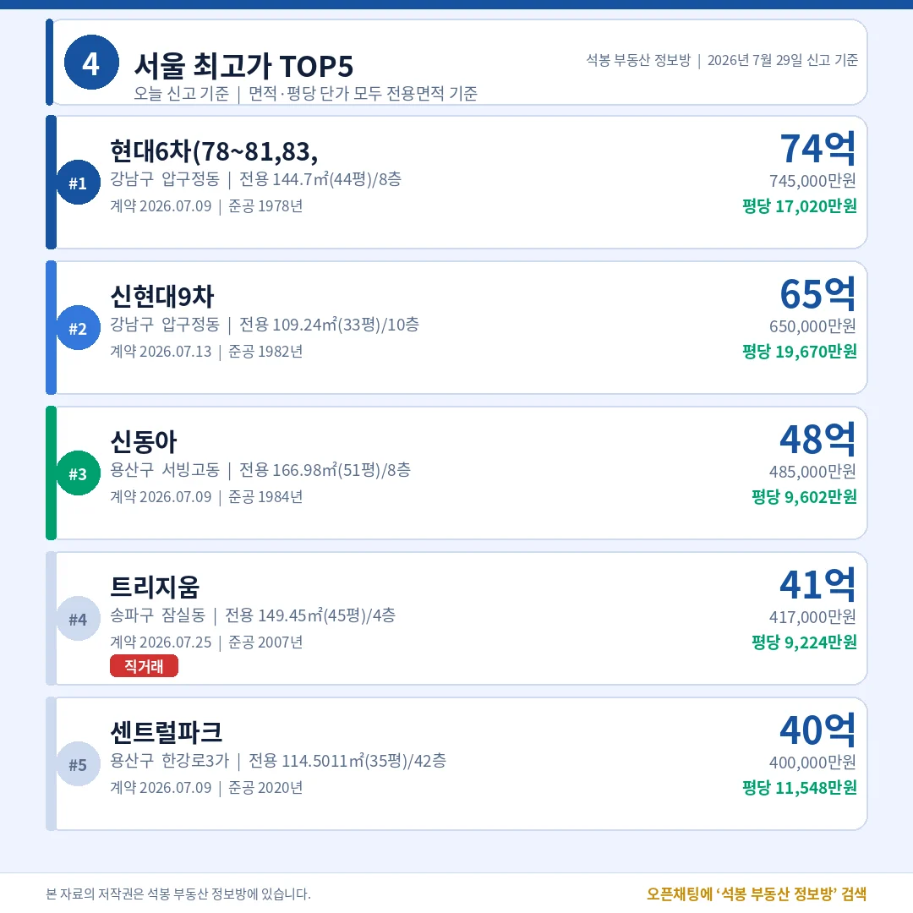
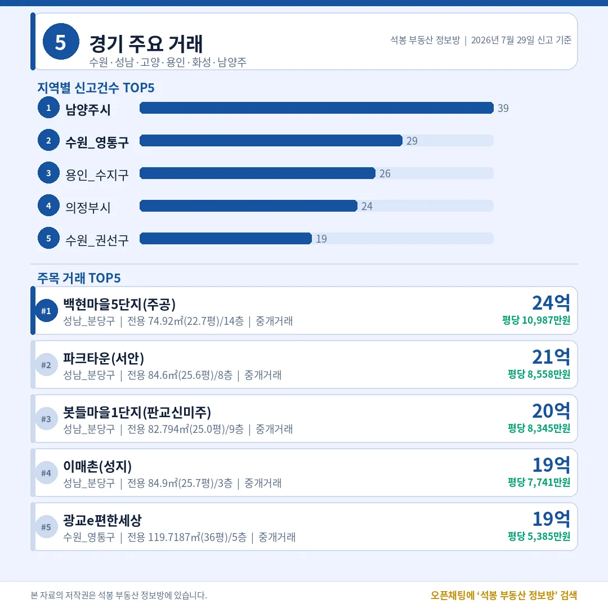
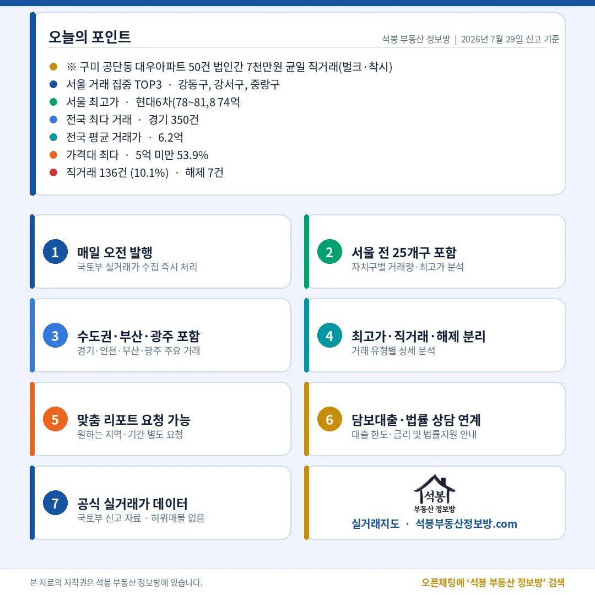

7월 29일 신고된 전국 아파트 실거래는 1,346건입니다. 지역별로는 경기(349건)와 서울(266건)이 상위였고, 서울 안에서는 강동구가 33건으로 거래량 1위였습니다. 값의 상단은 어제에 이어 압구정이 지켰습니다. 그런데 오늘은 눈에 걸리는 수치가 하나 있었습니다. 직거래 비중이 9.9%로 평소보다 튀어 보였는데, 뜯어보니 경북 구미의 한 단지에서 나온 법인 간 무더기 거래가 만든 착시였습니다. 오늘은 이 대목부터 짚어드리겠습니다.
신고 1,346건 가운데 계약이 살아 있는 유효거래는 1,339건, 취소된 해제는 7건뿐이었습니다. 문제는 직거래(공인중개사를 끼지 않은 거래)입니다. 오늘 직거래는 133건, 유효거래의 9.9%로 최근 하루 2~3%대에 머물던 것과 비교하면 껑충 뛴 수치입니다. 그런데 이 133건 가운데 50건이 경북 구미 공단동의 대우아파트 한 단지에서, 그것도 전부 7,000만원 균일가에 같은 날(계약일 28일) 법인 간으로 신고됐습니다. 실수요자가 사고판 거래가 아니라 법인 사이의 일괄 정리 물량으로 보는 게 자연스럽습니다.
이 50건을 빼고 다시 계산하면 직거래는 83건, 실질 비중은 6.4%(83건÷1,289건)로 내려갑니다. 여전히 평소보다는 조금 높지만 '직거래 급증' 같은 이야기로 읽을 수치는 아닙니다. 랭킹이나 비율을 볼 때 한 단지에서 나온 무더기 신고가 전체 그림을 흔들 수 있다는 점을 오늘이 잘 보여줍니다. 가격대는 여전히 중저가에 무게가 실려 3억 미만이 32.2%, 3억~6억이 29.8%로 6억 미만이 전체의 62.0%를 차지했고, 15억 이상 고가는 6.2%(83건)에 그쳤습니다.
여기서부터는 회원에게 보여드립니다
카카오 로그인 3초면 전문을 읽을 수 있습니다. 무료입니다.
가입하시면 지역 시장조사 보고서(약식)를 2회 무료로 요청하실 수 있습니다.
이미 회원이면 같은 버튼으로 로그인만 됩니다
어디서 거래됐나: 강동·강서가 서울을 이끌다

서울 구별 거래량
지역별로는 경기가 349건으로 가장 많았고 서울 266건, 인천 104건, 대구 94건, 부산 86건 순이었습니다. 서울·경기·인천을 합친 수도권 비중은 53.7%로, 전국 거래의 절반을 웃돌았습니다. 경기 안에서는 남양주시가 39건으로 가장 활발했고 수원 영통구(29건), 용인 수지구(26건), 의정부시(23건)가 뒤를 이었습니다.
서울에서는 강동구가 33건으로 거래량 1위, 강서구가 25건으로 뒤를 이었고 중랑구(19건)·동대문구(17건)·도봉구(16건)가 그다음이었습니다. 강동구 33건은 특정 단지에 물량이 몰린 흔적 없이 미사·천호·고덕 일대 여러 단지에 흩어진 실수요 거래였습니다. 반대로 강남구는 12건, 서초구는 신고 자체가 없어, 거래 건수만 보면 강남권은 오늘 조용했습니다. 사는 사람이 많은 곳과 비싼 값이 찍히는 곳이 다르다는 흐름이 오늘도 이어집니다.
오늘의 최고가: 압구정이 다시 상단을 채우다

서울 최고가 TOP5
오늘 전국 최고가는 강남구 압구정동 현대6차 전용 144.7㎡(43.8평)로 74.5억원이었습니다. 평당(전용 기준) 17,020만원. 2위도 같은 동네인 신현대9차 전용 109.24㎡(33.0평)가 65.0억원(평당 19,670만원)에 손바뀜했습니다. 두 곳 모두 1970~80년대 준공된 40년 안팎 구축인데, 재건축 뒤 새 아파트가 될 땅값을 미리 사는 자리라 전용 평당가가 신축을 웃돕니다. 어제 7월 28일 데일리에서도 강남 구축이 최상단을 채우는 하루라고 짚어드렸는데, 오늘은 그 주인공이 압구정 현대·신현대로 더 또렷해졌습니다.
재건축 기대가 값을 끌어올리는 건 압구정만의 이야기가 아닙니다. 오늘 서울 상위권에는 양천구 목동신시가지5 전용 152.85㎡(46.2평)가 40.0억원에 오르며 이름을 올렸습니다. 1986년 준공된 목동 대표 재건축 단지입니다. 반면 신축 쪽에서는 강남구 래미안대치팰리스(2015년 준공) 전용 91.93㎡(27.8평)가 39.7억원, 평당(전용) 14,276만원에 거래됐습니다. 40년 구축 압구정과 10년 신축 대치가 같은 상위 표 안에 나란히 있는 셈인데, 전용 평당가는 압구정·목동 재건축 쪽이 더 높게 형성됩니다. 강남권 최상단에서는 '지금 건물'보다 '앞으로 될 땅'이 값을 만든다는 흐름입니다.
수도권 밖은 어땠나: 구미 벌크를 걷어내면

경기/인천/부산/광주
지방에서는 대구가 94건으로 가장 활발했고 부산 86건, 광주 56건, 대전 56건이 뒤를 이었습니다. 표 위쪽에는 경북(77건)도 보이는데, 여기에는 주의가 필요합니다. 앞서 말씀드린 구미 공단동 대우아파트 법인 벌크 50건이 그대로 포함된 숫자이기 때문입니다. 이 물량을 걷어내면 경북의 실제 실수요 거래는 27건 수준으로, 지방 상위라기보다 평범한 하루였습니다. 지역 랭킹을 볼 때 절대 건수만 보면 이렇게 한 단지의 일괄 신고에 순위가 흔들릴 수 있습니다.
이 벌크를 빼고 나면 지방의 뼈대는 대구·부산·광주·대전 같은 광역시의 중저가 실수요가 받치고 있었다는 그림이 또렷해집니다. 수도권 외곽에서도 남양주·의정부 같은 경기 북부와 수원·용인 같은 남부 요지에서 거래가 고르게 이어졌습니다. 오늘 전국 1,346건의 실질적인 무게중심은 여전히 6억 미만 중저가 구간에 있었습니다.
오늘의 인사이트

마무리(오늘의 포인트)
오늘 1,346건은 '숫자를 그대로 믿으면 안 되는 하루'였습니다. 직거래 비중은 9.9%로 튀어 보였지만 구미 한 단지의 법인 벌크 50건을 빼면 실질 6.4%였고, 지방 상위처럼 보이던 경북도 벌크를 걷어내면 평범한 거래량이었습니다. 랭킹과 비율은 한 단지의 무더기 신고에 쉽게 흔들리기 때문에, 절대 건수 뒤에 무엇이 있는지 한 번 더 뜯어봐야 합니다.
착시를 걷어내고 나면 시장의 큰 그림은 최근과 같습니다. 거래량은 강동·강서 같은 서울 실수요와 경기·지방 광역시 중저가가 채웠고, 6억 미만이 전체의 62%를 넘었습니다. 반면 값의 상단은 압구정 현대·신현대 같은 재건축 구축이 60억~70억대에서 홀로 다투는, 전혀 다른 세계였습니다. 대부분의 거래가 도는 실수요 시장과 소수의 초고가 재건축 시장이 한 장의 표 안에서 따로 움직이는 흐름이 오늘도 그대로 확인됐습니다.
원자료: 국토교통부 실거래가 공개시스템(2026년 7월 29일 신고분) · 편집·제작: 석봉 부동산 정보방 · 본 자료는 정보 제공 목적이며 투자 권유가 아닙니다.